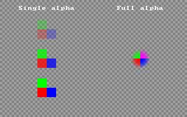
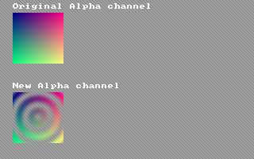

Help Center›FreeBASIC
Alphakeyword
Parameter to the Put graphics statement which selects alpha blending as the method
Syntax
Put [ target, ] [ STEP ] ( x,y ), source [ ,( x1,y1 )-( x2,y2 ) ], AlphaPut [ target, ] [ STEP ] ( x,y ), source [ ,( x1,y1 )-( x2,y2 ) ], Alpha, alphavalParameters
| Name | Description | |
|---|---|---|
alphaval | Optional alpha parameter in the range [0..255]. Overrides alpha values in individual pixels. |
Description
Alpha selects alpha blending as the method for Putting an image. If the alphaval parameter is specified, it overrides the alpha value of each pixel, and the mask color (magenta) will be treated as transparent. This works in 15, 16, 24, or 32-bit color depths.If
alphaval is not specified, Alpha will only work in 32-bit color depth, and Put will use the alpha value embedded within each pixel. Pixels using the mask color will be treated as normal, and drawn with their given alpha value.Alpha also has another mode which allows an 8-bit image to be Put on top of a 32-bit image. In this case, it will replace the alpha channel of the 32-bit image with the contents of the 8-bit image.Alpha values range between 0 and 255. An alpha value of 0 will not draw the image at all. All other alpha values are incremented by 1 to get a range between 2 and 256, and the result is then divided by 256 to get a value between 1/128 and 1, which is used to calculate the exact value of each pixel from the source and destination pixels. Thus, 255 is practically equivalent to drawing using Put with Trans blitting mode, 0 is equivalent to doing nothing at all, and all the other alpha values blend is expected.
Remarks
Differences from QB
- New to FreeBASIC
See also
Example
This example compares the two different
Alpha modes, including how they react to the mask color'' Set up a 32-bit screen
ScreenRes 320, 200, 32
'' Draw checkered background
For y As Integer = 0 To 199
For x As Integer = 0 To 319
PSet (x, y), IIf((x Shr 2 Xor y Shr 2) And 1, RGB(160, 160, 160), RGB(128, 128, 128))
Next x
Next y
'' Make image sprite for Putting
Dim img As Any Ptr = ImageCreate(32, 32, RGBA(0, 0, 0, 0))
For y As Single = -15.5 To 15.5
For x As Single = -15.5 To 15.5
Dim As Integer r, g, b, a
If y <= 0 Then
If x <= 0 Then
r = 255: g = 0: b = 0 '' red
Else
r = 0: g = 0: b = 255 '' blue
End If
Else
If x <= 0 Then
r = 0: g = 255: b = 0 '' green
Else
r = 255: g = 0: b = 255 '' magenta (transparent mask color)
End If
End If
a = 255 - (x ^ 2 + y ^ 2)
If a < 0 Then a = 0': r = 255: g = 0: b = 255
PSet img, (15.5 + x, 15.5 - y), RGBA(r, g, b, a)
Next x
Next y
'' Put with single Alpha value, Trans for comparison
Draw String (32, 10), "Single alpha"
Put (80 - 16, 50 - 16), img, Alpha, 64
Put (80 - 16, 100 - 16), img, Alpha, 192
Put (80 - 16, 150 - 16), img, Trans
'' Put with full Alpha channel
Draw String (200, 10), "Full alpha"
Put (240 - 16, 100 - 16), img, Alpha
'' Free the image memory
ImageDestroy img
'' Wait for a keypress
Sleep

This example shows the special method for setting a 32-bit alpha channel using an 8-bit image
Dim As Any Ptr img8, img32
Dim As Integer x, y, i
'' Set up an 8-bit graphics screen
ScreenRes 320, 200, 8
For i = 0 To 255
Palette i, i, i, i
Next i
Color 255, 0
'' Create an 8-bit image
img8 = ImageCreate(64, 64, 0, 8)
For y = 0 To 63
For x = 0 To 63
Dim As Single x2 = x - 31.5, y2 = y - 31.5
Dim As Single t = Sqr(x2 ^ 2 + y2 ^ 2) / 5
PSet img8, (x, y), Sin(t) ^ 2 * 255
Next x
Next y
Draw String (16, 4), "8-bit Alpha sprite"
Put (16, 16), img8
Sleep
'' Set up a 32-bit graphics screen
ScreenRes 320, 200, 32
For y = 0 To 199
For x = 0 To 319
PSet (x, y), IIf(x - y And 3, RGB(160, 160, 160), RGB(128, 128, 128))
Next x
Next y
'' Create a 32-bit, fully opaque sprite
img32 = ImageCreate(64, 64, 0, 32)
For y = 0 To 63
For x = 0 To 63
PSet img32, (x, y), RGB(x * 4, y * 4, 128)
Next x
Next y
Draw String (16, 4), "Original Alpha channel"
Put (16, 16), img32, Alpha
'' Put a new alpha channel using the 8-bit image
Put img32, (0, 0), img8, Alpha
Draw String (16, 104), "New Alpha channel"
Put (16, 116), img32, Alpha
''Free the memory for the two images
ImageDestroy img8
ImageDestroy img32
Sleep

Reference
- Documented in KeyPgAlphaGfx.html